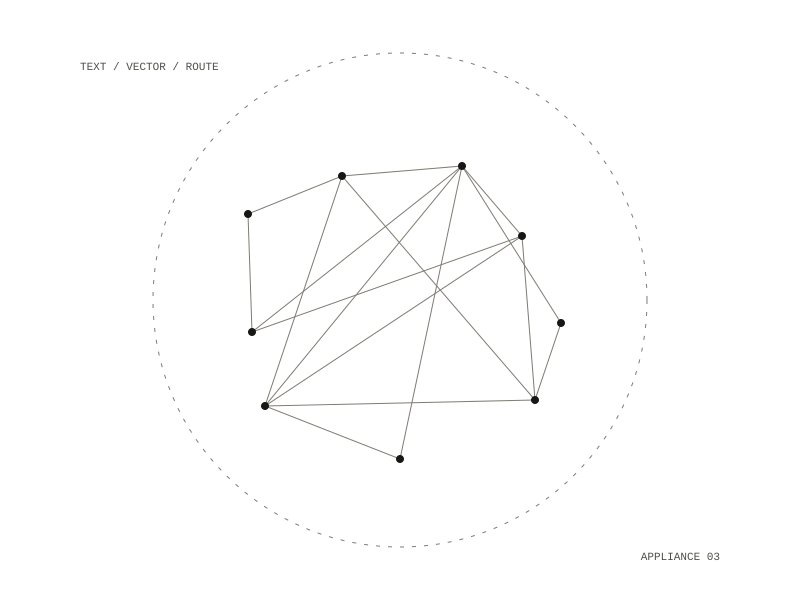

web-passthrough
web-passthrough is a small Python service that does two jobs for other programs: it turns text into embeddings, and it generates chat replies, either with a model running on this machine or with a hosted model.

Two modes
The service has two privacy modes, local and auto, and local is the default. In local mode every chat request goes to the model on this machine, and a request that asks for the hosted model is refused with an error that says cloud routing is disabled. In auto mode each request chooses: it goes to the local model unless it sets a cloud flag, and the hosted model is used only when a key for it has been set. A system prompt is passed on only to the hosted model.
Embeddings stay local
Embeddings are always made on this machine and never sent to a hosted provider. The caller can pick the embedding model per request; four are listed, with vectors of 384 or 1024 dimensions. A request takes one text or a list of texts and returns the vectors, the model name and a count.
Interface
The service answers on three routes:
/embedfor embeddings/chatfor replies, which also says which backend and model it routed to/healthfor status: whether the local model server is reachable, whether a hosted key is set, and the current mode
A refused hosted request comes back as HTTP 403. A browser page shows the status, refreshed every 10 seconds, beside forms for embeddings and chat. The tests run without a model server and check the health report, the error when embedding fails, and the refusal of a hosted request in local mode.
local only: requests for the hosted model are refused
text, or a list of chat messages
embedding vectors, or a reply as JSON